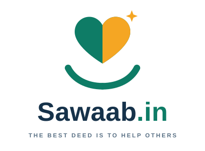
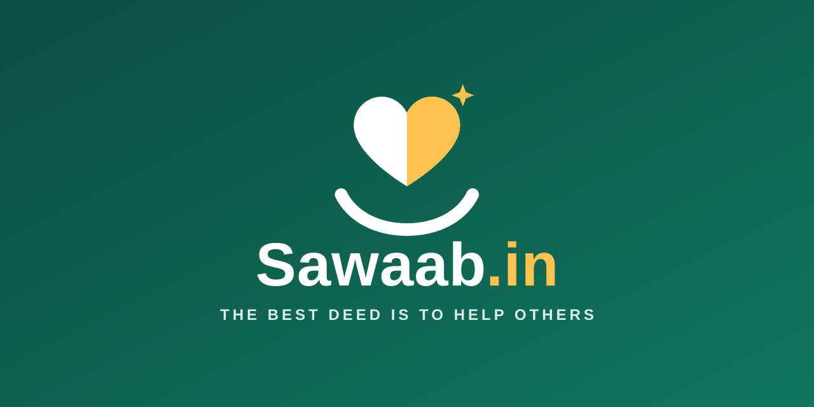

Primary lockup
Horizontal lockup for light backgrounds · use at ≥ 120 px width on screen / ≥ 35 mm in print.
Variants
Dark-background variant (transparent PNG included).
Single-colour version for print, stamps & watermarks.

Stacked / vertical lockup for square placements.

1280×640 banner for GitHub / social profiles.
Icon & favicon
The icon stays legible down to 24 px. Use sawaab-favicon.svg as the browser tab icon.
Colour palette
Sawaab Green
#0E7C66 · primary
#0E7C66 · primary
Deep Green
#0B4F41 · gradients
#0B4F41 · gradients
Sawaab Amber
#F5A623 · hope & food
#F5A623 · hope & food
Ink Slate
#16324A · wordmark
#16324A · wordmark
Slate Gray
#5B7286 · secondary text
#5B7286 · secondary text
Night
#0E1A24 · dark backgrounds
#0E1A24 · dark backgrounds
Files
| File | Use |
|---|---|
| sawaab-logo.svg | Primary horizontal logo (light backgrounds) |
| sawaab-logo-vertical.svg | Stacked logo for square placements |
| sawaab-logo-dark.svg | Logo for dark backgrounds |
| sawaab-logo-mono.svg | One-colour print / watermark version |
| sawaab-icon.svg | Icon-only mark (transparent) |
| sawaab-favicon.svg | Browser favicon (teal tile) |
| sawaab-social-banner.svg | 1280×640 banner for GitHub / social |
| png/ | Ready-to-use PNG exports (transparent) |
Usage guidelines
- Keep clear space around the logo of at least the height of the heart.
- Never stretch, rotate, outline or add effects to the mark.
- Use only the palette colours above — no other tints or shadows.
- On dark or photographic backgrounds use the dark variant; in single-colour print use the mono version.
- Minimum sizes: full lockup 120 px wide (screen) / 35 mm (print); icon 24 px.